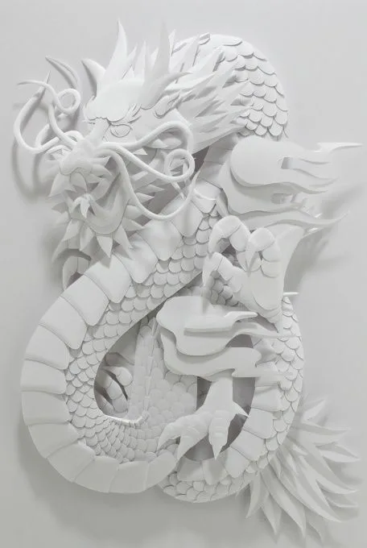
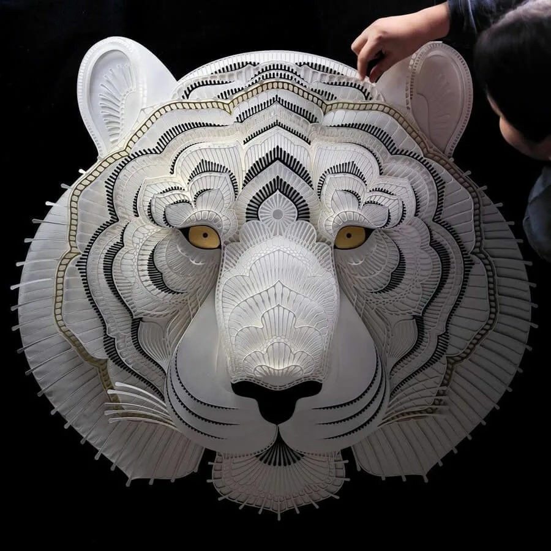
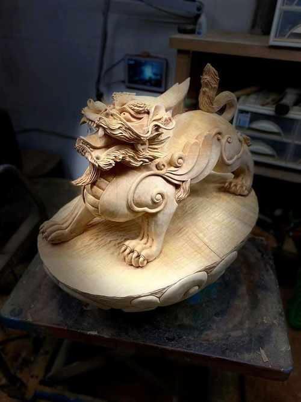

<!DOCTYPE html>
<html lang="en">
<head>
    <meta charset="UTF-8">
    <meta name="viewport" content="width=device-width, initial-scale=1.0">
    <title>Document</title>
    <link href="Cric.css" rel="stylesheet"/>
    <link href="test1.html" rel="stylesheet"/>
</head>
</html>
<html>
    <body>
        <main>
            <button id="id-theme">Dark Theme</button>
            <h1><em> Искусство Тайваня. </em> </h1>
            <p>Хун Синьфу (кит. 洪新富) — тайваньский художник, один из ведущих мастеров современной бумажной скульптуры.
            Более 30 лет Хун Синьфу исследует художественные возможности бумаги. Работы мастера экспонировались на персональных и коллективных выставках, а также участвовали в выставочно-образовательных программах более чем в двадцати странах мира, включая США, Канаду, Германию, Францию, Бельгию, Японию, Австралию, Бразилию и Россию. В 2013 году художник возглавил масштабный творческий проект в городе Тайчжун, в ходе которого более 200 учителей и учеников создали самую длинную в мире объемную книгу, установившую мировой рекорд Книги рекордов Гиннесса.
            </p>
            <h2>Вот несколько его работ:</h2>
            
            
            
            
            <p>Цай Минфэн— тайваньский мастер резьбы по дереву, создавший сотни скульптур. В 15 лет он покинул дом в уезде Саньчун, чтобы учиться резьбе по дереву на фабрике в городе Синьчжу.</p>
            
            
            
        </main>
            <script src="scrip.js"></script>
    </body>
</html> 